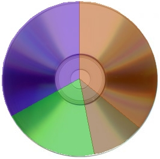

|
 | A fajsúlyosabb témákat nem
lehet a végtelenségig halmozni, úgyhogy egy kis hétvégi kikapcsolódásképpen az internetes
zeneletöltéseket vesszük górcsõ alá. Van úgyis annyi fontos dolog, amely fölött nem szabad
elsiklanunk, de ezek az apróbb, viszont mindennapos problémákat háttérbe szorítják. Most nem: annak
apropóján, hogy a 2005-ben indult Együtt a Zenéért nevû mozgalom bátran hirdet a manapság
megjelenõ, érdekes koncepciójú, úgynevezett trendmagazinokban.
A fõként a Tankcsapdával
példálozó csoportosulás azt tûzte ki céljául, hogy bebizonyítja a fiataloknak: kiadni a zenei
CD-kért 3000–5000 forintot jobban megéri, mint ingyen letölteni õket az internetrõl egy
fájlcserélõ hálózat segítségével. Ez a kijelentés azonban egy nyilvánvaló hazugság, amely
miatt az egész azonnal hiteltelenné válik. Kivált az érdekes, amikor azzal érvelnek, hogy a
zenész ebbõl él, a zeneletöltés pedig lopás. Az EU-s pénzek elsíbolása csak mutyizás a sajtó
szerint, de zenét letölteni lopás. Belenyúlsz a tankcsapdások zsebébe, és kiveszel belõle
egy százast, hívja valaki az FBI-t!
Az új kampány alapstratégiája, hogy
bebizonyítják: a CD-k nem azért drágák, mert azokon a zenészek keresnek, hanem azért, mert a
kiadók tömik a zsebeiket. Ehhez nekünk, fogyasztóknak vajmi kevés közünk van, ráadásul ez
éppenséggel nem is épül az eddigi marketingstratégiára, úgyhogy szépen bevéssük a nagy,
kövér egyest. Leülhetsz, Petike, nem veszünk több CD-t.
Az újságokban megjelenõl
grafikon egy háromezer forintos zenei CD-t vesz alapul. Az ár 20%-a, tehát 500 forint a
forgalmi adó, ez megy az állami zsebekbe. További 25% (szintén körülbelül 500 forintnak
számolják) a kiskereskedelmi árrés; ennyit keres az eladó. A maradék nagyjából kétezer
forintból 180 forint a szerzõi jogdíj, amelyet az ARTISJUS tesz el. Igen, CD-nként ennyi
pénzt kapnak ezek a rablók. A zenészeknek járó összeg, az úgynevezett royality mindössze
8–15% körüli összeg: 11%-os átlaggal számolva ez ebben az esetben 220 Ft. A további
költségek az államnak járó kulturális járadék (40 Ft/CD), a terjesztés költsége (200 Ft/CD),
szerzõi honorárium (a dalszerzõknek, 100 Ft/CD), stúdió- és marketingköltség (500 Ft/CD),
majd a lemez elõállításának költsége (darabonként 200 Ft!), illetve a borítómunkálatok (ide is
200 Ft/db-ot írtak). Szerencsétlen kiadó már csak 360 forintot tehet el egy
CD-ért.
Az Együtt a Zenéért mozgalmának alapvetõ stratégiája az a nevetséges ötlet
volt, hogy a zenehallgatók lelkiismeretére apellál. Arra lennének ötleteink, hogy miért nem
a saját házuk táján sepergetnek, ahol egy üres CD elõállítására kétszáz forintot számolnak
(úgy, hogy egy üres CD már nyolcan forintos áron szép haszonnal értékesíthetõ) és így tovább.
A négyoldalas, fizetett kampányanyagban megy a sírás, hogy a mai Magyarországon már az is jó
egy elõadónak, hogy húszezer példányt el tud adni a CD-jébõl. Arra ne térjünk ki, hogy
milyen színvonalon áll a mai magyar zenegyártás, legyen elég annyi, hogy ez a 220 forintos
royalityvel CD-nként 4 400 000 forint. Van ezzel munka, de azért ez nem olyan rossz pénz
tiszta profitként nézve, ha mellettük még szép koncertek is vannak (a mozgalom hamis
érvtechnikájára jellemzõ, hogy azt írják: ha nem keresnek a zenészek, nem tudnak
koncertezni, holott a kettõ állítás nem releváns egymással).
Érdekes módon a remek
kampány az internetet csak mint a zenei kultúra gyilkosát vizsgálja. Érdekes dolog úgy
beállítani a zenészeket, mint akiket nem érdekel, hogy hányan hallgatják õket, hanem csak az,
hogy hányan veszik meg a lemezüket. De ez is érthetõ, csak az nem: a többoldalas szövegben
miért csak egyetlen bekezdés, csupán két mondat foglalkozik a legális internetes
zeneletöltéssel? Ugyanis már most négy olyan weblap létezik a magyar netes tartományban is,
amelyekrõl legálisan lehet letölteni bizonyos számokat. Végre nem kell megvenni egy egész
lemezt, ha pusztán egy számra van szükségünk, de valóban fizethetünk a zenei szolgáltatásért. A
dalokért kért 100–200 forint bizony jár, ezt érzi is a tisztességes zenehallgató, és
végre nem kell kifizetni a CD-k elõállításának, csomagolásának, borítótervezésének,
szállításának stb. borsos árát. Valamiért azonban mégsem támogatják túlságosan ezt a nyugaton
egyébként mûködõ modellt.
Példát vehetnének az Együtt a Zenéért mozgalomhoz
csatlakozott magyar zenészek azokról, akik már megmutatták, hogy ezt másképpen is lehet.
Csupán egyetlen példa a Charlatans nevû zenekar, amely kifejezetten kérte, hogy ingyen töltsék
le a számaikat, sõt elérhetõvé is tették azokat az interneten. Õk úgy hiszik, hogy a valóban
együtt, a zenéért muzsikálnak, a bevételeiket pedig fõként az ajándéktárgyakból és a
koncertekbõl szerzik. A Radiohead most még érdekesebb koncepciót követ: az In Rainbows címû albumuk bár pénzért tölthetõ le az
internetrõl, mégsincs ára. Annyit fizet érte a hallgató, amennyit akar: amennyit megér neki. Ez
több szempontból is csodálatos: egy rajongó biztosan szívesebben fizet úgy, hogy tudja, a pénz
nagyobb része valóban a bandáé lesz, illetve azokhoz is eljuthatnak a számok, akik kevesebbet
tudnak fizetni, de mégis ki szeretnék fejezni a megbecsülésüket egy kisebb
összeggel.
Mert így is lehet. Ezt pedig a hazai zenekarok nem tudják megérteni. Évek
óta okádják az értetlen ostobaságaikat az internetrõl és közvetetten az internetezõkrõl,
halott lelkiismeretekre akarnak hatni lelkiismeretlenek, ahelyett, hogy a tisztesség
alternatíváját kínálnák. Dühítõ, amikor úgy ölik meg a maradék tisztességet az emberekben,
hogy feltételezik: nincs is már többé. Sokat tanulhatnának, de sajnos, azt kell mondanom:
némely (itt meg nem nevezett) nemzeti érzelmû zenekarnak is el kellene gondolkodnia. Mert õk
még a zenénért többért is pengetnek: a hazáért, azt mondják. Nekik még fontosabb lenne, ha
hitelesek maradnának.
| | vissza a fõoldalra |  |
| 1 2 3 4 5 6 7 8 9 | |  | | | | | | | | | | | | | | | | | | | | 1 2 3 4 5 6 7 8 9 |  |
|


túraszervezõ
túra-rss
mi ez?

legjobbak
legolvasottabbak
tartalomjegyzék
rss feed

AboryM
Caesar
Count Grishnackh
cscsabi
eürdüngh
Feki
GyalogKakukk
Ishukone
Kadzseszka
LACI1993
Mini
Muska
Rommel
Segi
Takezó
tommylee
vikcee
|